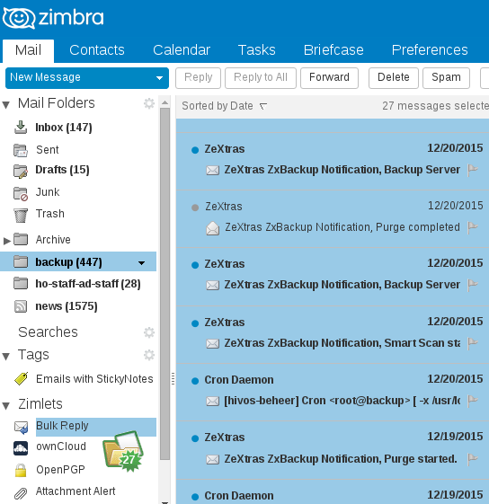

Zimbra Bulk Reply Zimlet User Help
Contents
How to use Zimbra Bulk Reply Zimlet
- Select up to 100 email messages in a folder by scrolling down in your mailbox, do not use CTRL+A and CTRL+SHIFT+A as this will not work.
- 2. Drag and drop them on to the Bulk Reply menu icon.

Then in the new mail window, select Show BCC to see the addresses from your selection.
Known limitations Reply-To does not work
Reply-To header is only used if you view each message prior to selecting it.
Selecting messages using CTRL+A and CTRL+SHIFT+A does not work, you have to scroll with the mouse and select manually for this Zimlet to work.
Zimbra Bulk Reply Zimlet
If you find Zimbra Bulk Reply Zimlet useful and want to support its continued development, you can make donations via:
Please report bugs
on Github.
License and third party FOSS libraries
Copyright (C) 2016 Barry de Graaff
This program is free software: you can redistribute it and/or modify
it under the terms of the GNU General Public License as published by
the Free Software Foundation, either version 2 of the License, or
(at your option) any later version.
This program is distributed in the hope that it will be useful,
but WITHOUT ANY WARRANTY; without even the implied warranty of
MERCHANTABILITY or FITNESS FOR A PARTICULAR PURPOSE. See the
GNU General Public License for more details.
You should have received a copy of the GNU General Public License
along with this program. If not, see http://www.gnu.org/licenses/.
Icons ans logo
Icons and logo where taken from the tango-icon-theme package and where released to the Public Domain by the Tango Desktop Project.